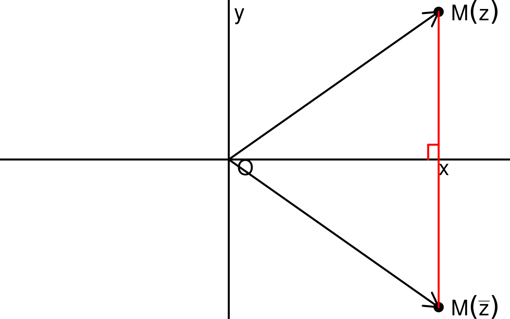
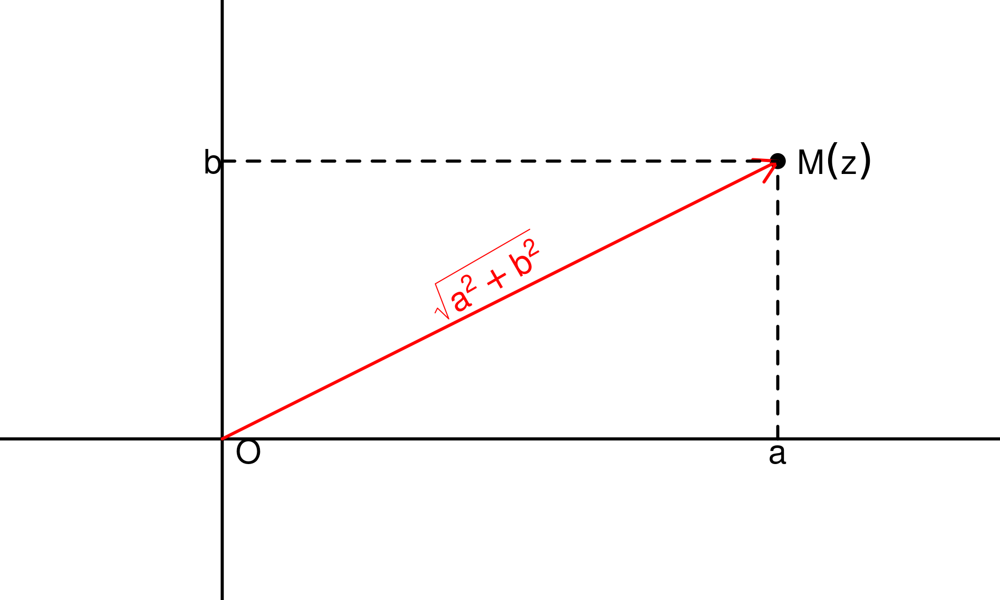
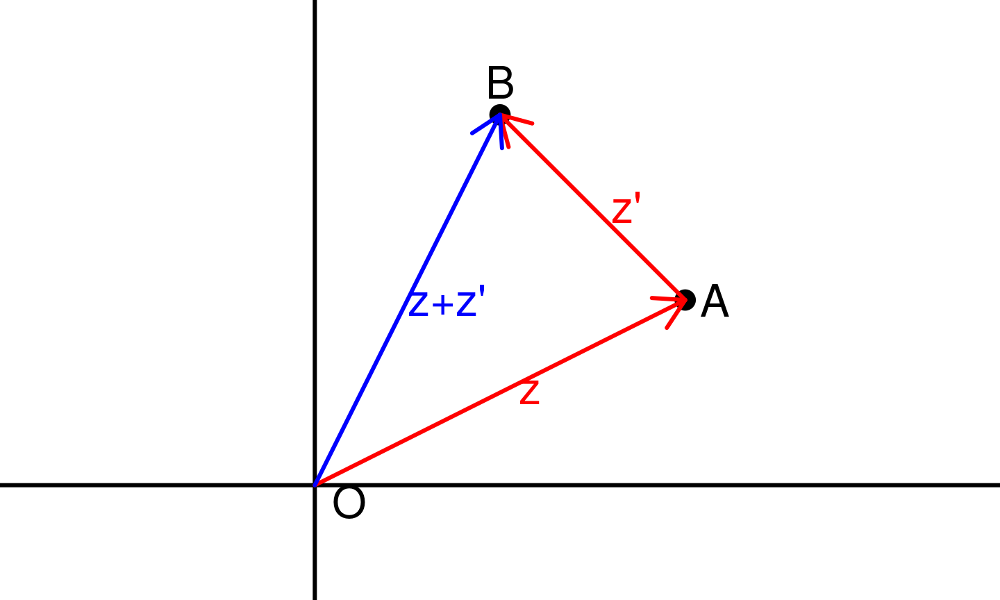

30 Septembre 2019
L’ensemble \(\mathbb{C}\) contient tous les réels ainsi qu’un nombre, noté \(i\) qui vérifie \(i^2 = -1\). Pour tout \(z \in \mathbb{C}\), il existe un unique couple \((a, b) \in \mathbb{R}^2\) tel que: \[z = a + i \times b\] Tout nombre réel \(x\) s’écrit alors \[x = x + i \times 0\] Les nombres complexes s’additionnent et se manipulent de la façon suivante: pour tous réels \(a, a', b, b'\) on a \[\begin{eqnarray} (a+ib) + (a'+ib') & = & (a+a') + i(b+b')\\ (a+ib) \times (a'+ib') & = & (aa' -bb') + i(ab' + a'b) \end{eqnarray}\]
L’écriture d’un complexe \(z\) sous forme \(z = a + ib\) (avec \(a\) et \(b\)
Soit \(z = a + ib\) un nombre complexe sous forme algébrique. On appelle nombre complexe conjugué, noté \(\bar{z}\), le complexe \[\bar{z} = a -ib\]
Remarques - Un complexe \(z\) est un réel si et seulement si \(Im(z) = 0\). - Un complexe \(z\) dont la partie réelle est nulle (\(Re(z) = 0\)) est dit imaginaire pur. On note \(i\mathbb{R}\) l’ensemble des imaginaires purs.
On a les mêmes règles d’opérations dans \(\mathbb{C}\) que dans \(C\) (et même un peu plus avec la conjugaison)
On peut voir un nombre complexe \(z\) comme un couple \((a, b)\) de nombres réels. On peut donc représenter les complexes comme des points dans le plan \(\mathcal{P}\) muni du repère orthonormé \((O, \vec{i}, \vec{j})\).
Soit \(M\) un point de coordonnées \((a, b)\) dans le plan \(\mathcal{P}\) muni du repère \((O, \vec{i}, \vec{j})\). On associe à \(M\) le nombre complexe \(z_M = a + ib\). \(z_M\) est appelé affixe (complexe) du point \(M\).
Réciproquement, à tout complexe \(z = a + ib\), on peut associer son point image \(M(z) \in \mathcal{P}\) de coordonnées \((a, b)\).
Enfin, si \(\vec{\alpha}\) est un vecteur du plan de coordonnées \((a, b)\), on lui associe son affixe complexe \(z_{\vec{\alpha}} = a + ib\).
Pour les propriétés qui suivent, faites des dessins pour les visualiser.
Soit \(A, B\) deux points du plan, on a \[z_\vec{AB} = z_B - z_A\]

Dans les deux cas, on pourra faire un dessin pour avoir une intuition géométrique des conditions (vecteurs colinéaires ou perpendiculaires) et essayer de les traduires en termes de condition sur les nombre complexes.
Soit \(z = a + ib\) un nombre complexe sous forme algébrique. Le module de \(z\), noté \(|z|\) est la distance entre le point \(O\) (d’affixe \(0\)) et le point \(M(z)\) (d’affixe \(z\)), c’est à dire \[|z| = OM(z) = \sqrt{a^2 + b^2}\] De même, si \(z\) est l’affixe d’un vecteur \(\vec{\alpha}\), alors \(|z| = \|\vec{\alpha}\|\) où \(\|\vec{\alpha}\|\) désigne la norme du vecteur \(\vec{\alpha}\).
Le module est la généralisation à \(\mathbb{C}\) de la valeur absolue sur \(\mathbb{R}\). C’est pour ça qu’on utilise la même notation.

On rappelle que la sommes de réels positifs est nulle si et seulement si tous ces réels sont nuls: \[\forall (x_1, x_2, \dots, x_n) \in \mathbb{R}_+^n, x_1 + \dots + x_n = 0 \Leftrightarrow x_1 = \dots x_n = 0\]
Soit \(z\) et \(z'\) deux complexes. On a \[ |z + z'| \leq |z| + |z'|\]
Soit \(O\) le point d’affixe \(0\), \(A\) celui d’affixe \(z\) et \(B\) celui d’affixe \(z+z'\).
L’inégalité triangulaire dans le triangle \(ABO\) donne \[ OB \leq OA + AB \]
Or \(OB = |z + z'|\), \(OA = |z|\) et \(AB = |z'|\) donc on a bien \[ |z + z'| \leq |z| + |z'|\]

L’ensemble des nombres complexes de module \(1\) se note \(\mathbb{U}\). Il correspond géométriquement à l’ensemble des affixes des points du cercle unité (de centre \(O\) et de rayon \(1\)).
Soit \(z\) un nombre de complexe de module \(1\), il existe un réel \(\theta\) (en fait une infinité) tel que \[z = \cos(\theta) + i\sin(\theta)\]
C’est immédiat avec ce qu’on a vu en trigonométrie. Comme \(z = a + ib\) est de module \(1\) on a \(a^2 + b^2 = 1\) et \(a\) et \(b\) peuvent donc s’écrire comme le \(\cos\) et le \(\sin\) d’un angle \(\theta\) bien choisi.
Soit \(z\) un nombre complexe
Remarques - Il y a une infinité d’arguments, l’argument n’est défini qu’à \(2\pi\) près. - On parle d’un argument, pas de l’argument d’un complexe - Si on se restreint à un intervalle \(I\) de longueur \(2\pi\) (par exemple \(]-\pi, \pi]\)), l’argument est bien unique dans \(I\).
On rappelle que la rotation \(R(O, \alpha)\) est l’application de \(\mathcal{P} \to \mathcal{P}\) qui à tout point \(M\) associe le point \(M'\) qui vérifie: - \(OM = OM'\) - \((\vec{OM}, \vec{OM'}) = \alpha\)
On sait que \(\mathcal{P}\) est identifié à \(\mathbb{C}\). On peut donc se demander s’il existe un lien entre l’affixe \(z\) de \(M\) et celle \(z'\) de \(M'\).
La réponse est oui. Si \(z_\alpha\) est un nombre complexe tel que \(|z_\alpha| = 1\) et que \(\alpha\) est un argument de \(z_\alpha\), alors \(z' = z_\alpha z\). Autrement dit, multiplier par un nombre complexe de module \(1\) et d’argument \(\alpha\) revient à faire une rotation de centre \(O\) et d’angle \(\alpha\) sur les images.
Soit \(\theta \in \mathbb{R}\), on note \[e^{i\theta} = \cos(\theta) + i\sin(\theta)\]
Soit \(\theta, \theta' \in \mathbb{R}\), on a \[e^{i\theta + i\theta'} = e^{i(\theta + \theta')} = e^{i\theta} \times e^{i\theta'}\]
Remarques La définition de \(e^{i\theta}\) peut sembler arbitraire mais la proposition précédente montre que c’est la “bonne” définition: c’est celle qui étend les propriétés de l’exponentielle des réels purs aux imaginaires purs.
Soit \(\rho > 0\) et \(\theta \in \mathbb{R}\), on a \[\overline{\rho e^{i\theta}} = \rho e^{-i\theta}\]
Soit \(z\) un complexe non nul et \(\theta\) un réel. \(\theta\) est un argument de \(z\) si et seulement \(z = |z|e^{i\theta}\)
Soit \(z\) un complexe non nul. Il existe un couple \((\rho, \theta) \in \mathbb{R}_+^\star \times \mathbb{R}\) tel que \[ z= \rho e^{i\theta}\]
Soit \(z, z'\) deux nombres complexes non nuls tels que \[ z= \rho e^{i\theta} \text{ et } z= \rho' e^{i\theta'} \text{ avec } \rho, \rho' > 0\] Alors, on a \[ z = z' \Leftrightarrow \begin{cases} \rho = \rho' \\ \exists k \in \mathbb{Z} \text{ tel que } \theta' = \theta + 2k\pi \end{cases}\]
Soit \(z = a+ib\) un nombre complexe sous forme algébrique. On pose \[ e^z= e^a e^{ib} = e^a (\cos(b) + i\sin(b)) \]
Remarques La définition et la proposition montre que l’exponentielle complexe étend bien l’exponentielle réelle de façon cohérente sur \(\mathbb{C}\) (on l’avait déjà vu pour \(i\mathbb{R}\))
Remarque Contrairement aux nombres réels positifs, \(z^x\) n’est pas bien défini quand \(z\) est complexe (alors que pour \(a > 0\), on a \(a^x = e^{x\ln(a)})\). On retiendra donc que \(z^x\) (avec \(z\) complexe) n’est bien défini que pour \(x \in \mathbb{Z}\).
Dans les exercices suivants, l’objectif est de se ramener à des sommes connues (Sommes des termes d’une suite géométrique, Binôme de Newton). On peut par exemple essayer de calculer \(A_n + iB_n\) avant d’isoler ses parties réelles et imaginaires. On peut aussi noter que \(\cos(k\theta) + i\sin(k\theta) = (e^{i\theta})^k\).
Calculer, pour \(n \in \mathbb{N}\) et \(\theta \in \mathbb{R}\):
On l’a vu dans la définition de l’exponentielle complexe mais il existe un lien fort entre les fonctions trigonométriques et l’exponentielle complexe. Ce lien est formalisé par les formules d’Euler
Soit \(\theta\) un nombre réel. On a \[\cos(\theta) = \frac{e^{i\theta} + e^{-i\theta}}{2} \text{ et } \sin(\theta) = \frac{e^{i\theta} - e^{-i\theta}}{2i}\]
Un autre lien fort qui existe est la formule de Moivre:
Soit \(\theta\) un nombre réel et \(n \in \mathbb{Z}\). On a \[(\cos(\theta) + i\sin(\theta))^n = (e^{i\theta})^n = \cos(n\theta) + i\sin(n\theta)\]
Il est plus aisé de retrouver les formules d’additions à partir de la définition de l’exponentielle complexe que de les apprendre par coeur. En effet:
\[\begin{align} \cos(a+b) & = Re(e^{i(a+b)}) = Re(e^{ia} \times e^{ib}) \\ & = Re((\cos(a)\cos(b) - \sin(a)\sin(b)) \\ & \quad + i(\cos(a)\sin(b) + \sin(a)\cos(b)) ) \\ & = \cos(a)\cos(b) - \sin(a)\sin(b) \\ \end{align}\]
On montre de même que \[ \sin(a+b) = \cos(a)\sin(b) + \sin(a)\cos(b)\]
Toutes les autres formules en découlent.
L’idée est d’exprimer \(\cos^n(x)\sin^p(x)\) pour \(x \in \mathbb{R}\) et \(n,p \in \mathbb{N}\) en fonction des \(\cos(kx)\) et des \(\sin(kx)\). Pour ce faire on utilise les formules d’Euler.
On commence par écrire \[\cos^n(x)\sin^p(x) = \left( \frac{e^{i\theta} + e^{-i\theta}}{2}\right)^n \left( \frac{e^{i\theta} - e^{-i\theta}}{2i} \right)^p\]
Ensuite, on développe (en utilisant le binôme de Newton) et on utiliser les formules d’Euler dans l’autre sens pour simplifier.
On chercher à linéariser \(\cos^3(x)\)
\[\begin{align} \cos^3(x) & = \left( \frac{e^{ix} + e^{-ix}}{2}\right)^3 \\ & = \frac{1}{8}\left(e^{i3x} + 3e^{i2x}e^{-ix} + 3e^{ix}e^{-i2x} + e^{-i3x}\right) \\ & = \frac{1}{8} \left(e^{i3x} + 3e^{ix} + 3e^{-ix} + e^{-i3x}\right) \\ & = \frac{1}{8} \left(e^{i3x} + e^{-i3x} + 3(e^{ix} + e^{-ix})\right) \\ & = \frac{1}{8} \left(2\cos(3x) + 6\cos(x)\right) = \frac{1}{4}(3\cos(x) + \cos(3x)) \\ \end{align}\]
C’est la transformation inverse de la précédente. On veut exprimer \(\cos(nx)\) en fonction de \(\cos(x)\) et \(\sin(x)\). Pour cela, on applique la formule de Moivre: \[\begin{align} \cos(nx) & = Re(\cos(nx) + i\sin(nx)) \\ & = Re((\cos(x) + i\sin(x))^n) \end{align} \] Il suffit alors de développer en utilisant le binôme de Newton et de ne garder que la partie réelle.
Pour \(n = 3\), on a \[\begin{align} (\cos(x) + i\sin(x))^3 & = \cos^3(x) + 3i\cos^2(x)\sin(x) \\ & \quad - 3\cos(x)\sin^2(x) -i\sin^3(x) \\ & = \cos^3(x) - 3\cos(x)\sin^2(x) \\ & \quad + i(3\cos^2(x)\sin(x) - \sin^3(x)) \\ \end{align} \]
On en déduit \[\begin{align} \cos(3x)& = \cos^3(x) - 3\cos(x)\sin^2(x) \\ \sin(3x)& = 3\cos^2(x)\sin(x) - \sin^3(x) \\ \end{align} \]
Soit \(Z\) un nombre complexe, on cherche à calculer une racine carrée de \(Z\) c’est à dire un nombre complexe \(z\) tel que \(z^2 = Z\).
Comme dans \(\mathbb{R}\), si \(z\) est solution, alors \(-z\) mais contrairement à \(\mathbb{R}\), on ne peut pas parler de la racine carrée puisque la condition \(z > 0\) n’a pas de sens pour un complexe.
Soit \(Z\) un nombre complexe
Si \(Z = \rho e^{i\theta}\) avec \(\rho \geq 0\), ces deux solutions sont: \[z_1 = \sqrt{\rho}e^{i\theta/2} \text{ et } z_2 = -z_1 = -\sqrt{\rho}e^{i\theta/2}\]
Si \(Z\) est donné sous forme algébrique, il faut faire plus d’efforts…
Si \(Z\) est donné sous forme algébrique \(Z = A + iB\) (avec \(A, B\) réels), on va chercher les racines carrés \(z\) sous forme algébrique \(z = a + ib\) en utilisant 2 propriétés:
La première (\(z^2 = Z\)) donne: \[\begin{align} z^2 = A + iB & \Leftrightarrow (a^2-b^2) + 2iab = A + iB \\ & \Leftrightarrow \begin{cases} a^2 - b^2 & = & A \\ 2ab & = & B \end{cases} \end{align} \]
La deuxième (\(|z|^2 = |Z|\)) donne \[a^2 + b^2 = \sqrt{A^2 + B^2}\]
On peut résoudre le premier système: \[ \begin{align*} \begin{cases} a^2 - b^2 & = & A \\ a^2 + b^2 & = & \sqrt{A^2 + B^2} \end{cases} & \Leftrightarrow \begin{cases} 2a^2 & = & \sqrt{A^2 + B^2} + A \\ 2b^2 & = & \sqrt{A^2 + B^2} - A\end{cases} \\ & \Leftrightarrow \begin{cases} a & = & \pm \sqrt{\frac{\sqrt{A^2 + B^2} + A}{2}} \\ b & = & \pm \sqrt{\frac{\sqrt{A^2 + B^2} - A}{2}} \end{cases} \end{align*} \]
On a donc \(4\) possibilités pour \((a, b)\). Le signe de \(B = 2ab\) permet de n’en conserver que deux des 4.
On essaie de calculer les racines carrés de \(5 - 12i\). Il n’y a pas de forme exponentielle intéressante pour ce complexe donc on passe par la forme algébrique. On cherche une racine carré \(z = a + ib\) sous forme algébrique. On a d’une part: \[ \begin{eqnarray*} z^2 = 5 - 12i & \Leftrightarrow & (a^2 - b^2) + 2iab = 5 - 12i \\ & \Leftrightarrow & \begin{cases} a^2 - b^2 & = & 5 \\ 2ab & = & -12 \end{cases} \end{eqnarray*}\] Et d’autre part \(|z|^2 = a^2 + b^2 = |5 - 12i| = \sqrt{25 + 144} = \sqrt{169} = 13\).
On doit donc résoudre le système: \[\begin{cases} a^2 - b^2 & = & 5 \\ a^2 + b^2 & = & 13 \end{cases} \Leftrightarrow \begin{cases} a^2 & = & 9 \\ b^2 & = & 4 \end{cases}\]
Qui donne \(a = \pm 3\) et \(b = \pm 2\). Comme \(ab = 6 < 0\), les deux solutions sont: \[z_1 = 3-2i \text{ et } z_2 = -3 + 2i\].
Soit \((a, b, c) \in \mathbb{C}\) avec
En notant \(\alpha\) une racine carrée de \(\Delta\) (qui existe toujours), les solutions de \((E)\) sont: \[ z_1 = \frac{-b + \alpha}{2a} \text{ et } z_1 = \frac{-b - \alpha}{2a}\]
Remarque Contrairement aux équations de degré 2 dans \(\mathbb{R}\), les équations de degré \(2\) dans \(\mathbb{C}\) ont toujours deux solutions (potentiellement confondues).
Avec les notations précédentes, on a \(z_1 z_2 = c/a\) et \(z_1 + z_2 = - b/a\)
Remarques
La Places des Vosges a une superficie de 19600 m\(^2\) et un périmètre de 560 mètres. Quelles sont ses dimensions?
On note \(l\) et \(L\) les dimensions la place. D’après l’énoncé \(lL = 19600\) et \(2(l+L) = 560\) donc \(l+L = 280\). On sait que \(l\) et \(L\) sont solutions de l’équation (d’inconnue \(x\)): \[(x-l)(x-L) = 0\] Cette équation peut se réécrire \[x^2 - (l+L)x +lL = 0\]
En substituant avec les valeurs de l’énoncé, \(l\) et \(L\) sont solutions de l’équation \[x^2 - 280x + 19600 = 0\] En résolvant, on obtient \(l=L=140\). On pourrait pu aller plus vite en utilisant l’information que la place des Vosges est carrée…